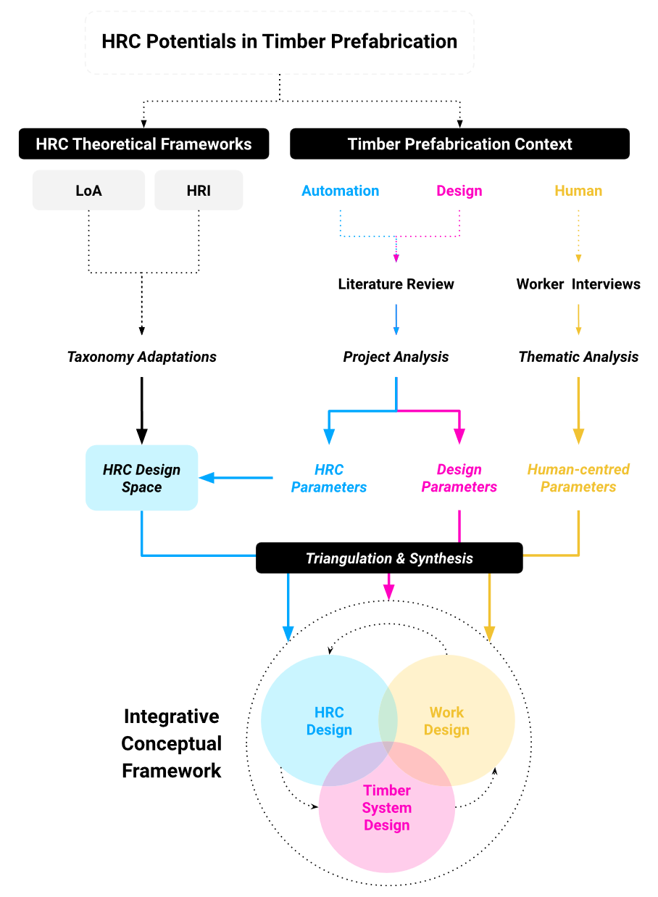

Challenges and potential for human–robot collaboration in timber prefabrication

Authors. Xiliu Yang, Felix Amtsberg, Michael Sedlmair, Achim Menges
Venue. Automation in Construction (2024) Full Paper
Type. Full Paper
Abstract. Recent advancements in robotics and human–machine interfaces enable new collaborative procedures that combine the strengths of machines and humans. Compared to existing automation technologies in the timber prefabrication industry, human–robot collaboration (HRC) offers new possibilities for increased flexibility and productivity. This paper aims to map out the challenges and opportunities for HRC within the context of timber prefabrication by constructing a conceptual framework. The framework is based on three pillars: (1) existing HRC theories and frameworks, (2) a literature review of HRC research in robotic timber fabrication, and (3) perspectives of human labour in the timber construction industry. The relevant topics among these three areas are triangulated to construct a conceptual framework that bridges the system-, design-, and human-centred considerations. The framework serves as an organising device to support future explorations and research on human–robot collaboration in robotic timber construction.